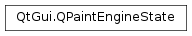

QPaintEngineState¶
Synopsis¶
Functions¶
- def
backgroundBrush() - def
backgroundMode() - def
brush() - def
brushNeedsResolving() - def
brushOrigin() - def
clipOperation() - def
clipPath() - def
clipRegion() - def
compositionMode() - def
font() - def
isClipEnabled() - def
matrix() - def
opacity() - def
painter() - def
pen() - def
penNeedsResolving() - def
renderHints() - def
state() - def
transform()
Detailed Description¶
The
PySide2.QtGui.QPaintEngineStateclass provides information about the active paint engine’s current state.
PySide2.QtGui.QPaintEngineStaterecords which properties that have changed since the last time the paint engine was updated, as well as their current value.Which properties that have changed can at any time be retrieved using the
PySide2.QtGui.QPaintEngineState.state()function. This function returns an instance of theQPaintEngine.DirtyFlagstype which stores an OR combination ofQPaintEngine.DirtyFlagvalues. TheQPaintEngine.DirtyFlagenum defines whether a property has changed since the last update or not.If a property is marked with a dirty flag, its current value can be retrieved using the corresponding get function:
The
PySide2.QtGui.QPaintEngineStateclass also provide thePySide2.QtGui.QPaintEngineState.painter()function which returns a pointer to the painter that is currently updating the paint engine.An instance of this class, representing the current state of the active paint engine, is passed as argument to the
QPaintEngine.updateState()function. The only situation in which you will have to use this class directly is when implementing your own paint engine.See also
-
class
PySide2.QtGui.QPaintEngineState¶
-
PySide2.QtGui.QPaintEngineState.dirtyFlags¶
-
PySide2.QtGui.QPaintEngineState.backgroundBrush()¶ Return type: PySide2.QtGui.QBrushReturns the background brush in the current paint engine state.
This variable should only be used when the
PySide2.QtGui.QPaintEngineState.state()returns a combination which includes theQPaintEngine.DirtyBackgroundflag.
-
PySide2.QtGui.QPaintEngineState.backgroundMode()¶ Return type: PySide2.QtCore.Qt.BGModeReturns the background mode in the current paint engine state.
This variable should only be used when the
PySide2.QtGui.QPaintEngineState.state()returns a combination which includes theQPaintEngine.DirtyBackgroundModeflag.
-
PySide2.QtGui.QPaintEngineState.brush()¶ Return type: PySide2.QtGui.QBrushReturns the brush in the current paint engine state.
This variable should only be used when the
PySide2.QtGui.QPaintEngineState.state()returns a combination which includes theQPaintEngine.DirtyBrushflag.
-
PySide2.QtGui.QPaintEngineState.brushNeedsResolving()¶ Return type: PySide2.QtCore.boolReturns whether the coordinate of the fill have been specified as bounded by the current rendering operation and have to be resolved (about the currently rendered primitive).
-
PySide2.QtGui.QPaintEngineState.brushOrigin()¶ Return type: PySide2.QtCore.QPointFReturns the brush origin in the current paint engine state.
This variable should only be used when the
PySide2.QtGui.QPaintEngineState.state()returns a combination which includes theQPaintEngine.DirtyBrushOriginflag.
-
PySide2.QtGui.QPaintEngineState.clipOperation()¶ Return type: PySide2.QtCore.Qt.ClipOperationReturns the clip operation in the current paint engine state.
This variable should only be used when the
PySide2.QtGui.QPaintEngineState.state()returns a combination which includes either theQPaintEngine.DirtyClipPathor theQPaintEngine.DirtyClipRegionflag.
-
PySide2.QtGui.QPaintEngineState.clipPath()¶ Return type: PySide2.QtGui.QPainterPathReturns the clip path in the current paint engine state.
This variable should only be used when the
PySide2.QtGui.QPaintEngineState.state()returns a combination which includes theQPaintEngine.DirtyClipPathflag.
-
PySide2.QtGui.QPaintEngineState.clipRegion()¶ Return type: PySide2.QtGui.QRegionReturns the clip region in the current paint engine state.
This variable should only be used when the
PySide2.QtGui.QPaintEngineState.state()returns a combination which includes theQPaintEngine.DirtyClipRegionflag.
-
PySide2.QtGui.QPaintEngineState.compositionMode()¶ Return type: PySide2.QtGui.QPainter.CompositionModeReturns the composition mode in the current paint engine state.
This variable should only be used when the
PySide2.QtGui.QPaintEngineState.state()returns a combination which includes theQPaintEngine.DirtyCompositionModeflag.
-
PySide2.QtGui.QPaintEngineState.font()¶ Return type: PySide2.QtGui.QFontReturns the font in the current paint engine state.
This variable should only be used when the
PySide2.QtGui.QPaintEngineState.state()returns a combination which includes theQPaintEngine.DirtyFontflag.
-
PySide2.QtGui.QPaintEngineState.isClipEnabled()¶ Return type: PySide2.QtCore.boolReturns whether clipping is enabled or not in the current paint engine state.
This variable should only be used when the
PySide2.QtGui.QPaintEngineState.state()returns a combination which includes theQPaintEngine.DirtyClipEnabledflag.
-
PySide2.QtGui.QPaintEngineState.matrix()¶ Return type: PySide2.QtGui.QMatrixReturns the matrix in the current paint engine state.
Note
It is advisable to use
PySide2.QtGui.QPaintEngineState.transform()instead of this function to preserve the properties of perspective transformations.This variable should only be used when the
PySide2.QtGui.QPaintEngineState.state()returns a combination which includes theQPaintEngine.DirtyTransformflag.
-
PySide2.QtGui.QPaintEngineState.opacity()¶ Return type: PySide2.QtCore.qrealReturns the opacity in the current paint engine state.
-
PySide2.QtGui.QPaintEngineState.painter()¶ Return type: PySide2.QtGui.QPainterReturns a pointer to the painter currently updating the paint engine.
-
PySide2.QtGui.QPaintEngineState.pen()¶ Return type: PySide2.QtGui.QPenReturns the pen in the current paint engine state.
This variable should only be used when the
PySide2.QtGui.QPaintEngineState.state()returns a combination which includes theQPaintEngine.DirtyPenflag.
-
PySide2.QtGui.QPaintEngineState.penNeedsResolving()¶ Return type: PySide2.QtCore.boolReturns whether the coordinate of the stroke have been specified as bounded by the current rendering operation and have to be resolved (about the currently rendered primitive).
-
PySide2.QtGui.QPaintEngineState.renderHints()¶ Return type: PySide2.QtGui.QPainter.RenderHintsReturns the render hints in the current paint engine state.
This variable should only be used when the
PySide2.QtGui.QPaintEngineState.state()returns a combination which includes theQPaintEngine.DirtyHintsflag.
-
PySide2.QtGui.QPaintEngineState.state()¶ Return type: PySide2.QtGui.QPaintEngine.DirtyFlagsReturns a combination of flags identifying the set of properties that need to be updated when updating the paint engine’s state (i.e. during a call to the
QPaintEngine.updateState()function).See also
-
PySide2.QtGui.QPaintEngineState.transform()¶ Return type: PySide2.QtGui.QTransformReturns the matrix in the current paint engine state.
This variable should only be used when the
PySide2.QtGui.QPaintEngineState.state()returns a combination which includes theQPaintEngine.DirtyTransformflag.
© 2018 The Qt Company Ltd. Documentation contributions included herein are the copyrights of their respective owners. The documentation provided herein is licensed under the terms of the GNU Free Documentation License version 1.3 as published by the Free Software Foundation. Qt and respective logos are trademarks of The Qt Company Ltd. in Finland and/or other countries worldwide. All other trademarks are property of their respective owners.